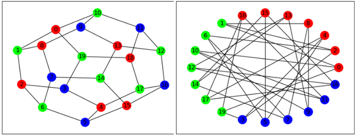

GCol: A Library for Graph Coloring¶
GCol is an open-source Python library for graph coloring that is built on top of the NetworkX package. It provides easy-to-use, high-performance algorithms for node coloring, edge coloring, equitable coloring, weighted coloring, precoloring, and maximum independent set indentification. It also offers several tools for solution visualization.
In general, graph coloring problems are NP-hard. This package therefore offers both exponential-time exact algorithms and polynomial-time heuristic algorithms.
Contents:
- 1. General Info
- 2. An Introduction to the
gcolLibrary - 3. Case Study: Exam Timetabling
- 4. Performance Analysis
- 5. Documentation
chromatic_index()chromatic_number()coloring_layout()edge_coloring()edge_k_coloring()edge_precoloring()equitable_edge_k_coloring()equitable_node_k_coloring()get_edge_colors()get_node_colors()get_set_colors()kempe_chain()max_independent_set()min_cost_k_coloring()multipartite_layout()node_coloring()node_k_coloring()node_precoloring()partition()